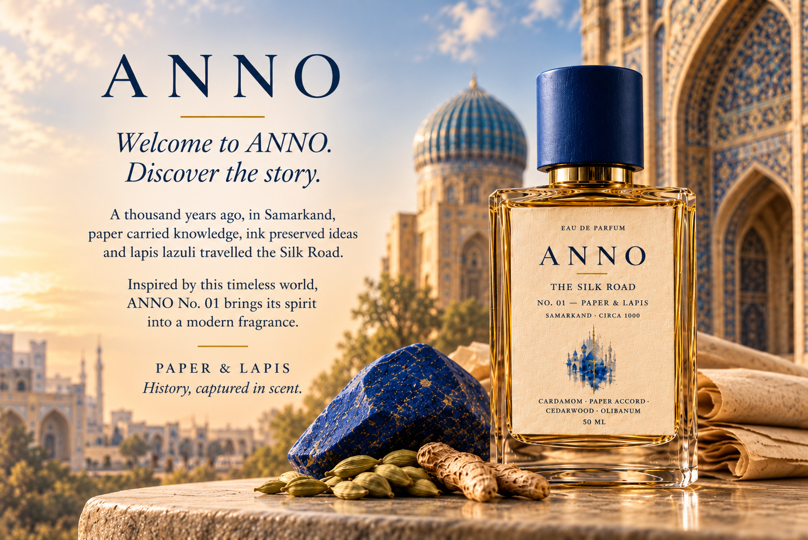
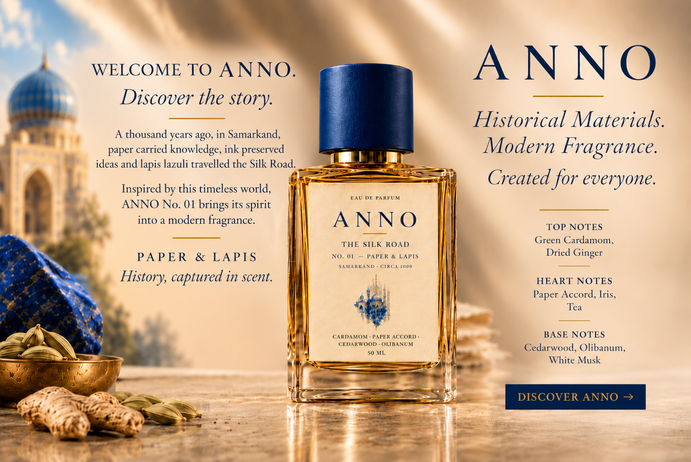

01 / FIBRE & FORM
Paper
KNOWLEDGE & CRAFTA surface for knowledge. Handmade fibres, quiet irregularity and the enduring gesture of making.

A thousand years ago, in Samarkand, paper gave knowledge a lasting form, ink preserved ideas and lapis lazuli travelled the Silk Road. Inspired by these timeless materials, ANNO No. 01 translates their character into a contemporary fragrance.
Paper & Lapis — A story, expressed in scent.
A surface for knowledge. Handmade fibres, quiet irregularity and the enduring gesture of making.
A trace of thought. Deep black, fluid movement and the human mark that carries stories forward.
The origin of ultramarine. A precious blue pigment connecting mineral, art and the written page.

ANNO NO. 01 — PAPER & LAPISA contemporary interpretation of paper, ink and ultramarine: dry, quietly textured and refined. Samarkand offers the historical context; the materials remain at the heart of the fragrance.
TOPGreen Cardamom · Dried Ginger
HEARTPaper Accord · Iris · Tea
BASECedarwood · Olibanum · White Musk
Planned retail price. Final availability and product details to be confirmed before launch.
Lapis lazuli was prized not only as a stone. Ground into pigment, it became ultramarine — an extraordinary blue used in art and manuscripts. For ANNO, the pigment is the visual expression; the stone is its origin.
Begin with the ANNO Discovery sample. Explore Paper & Lapis on your skin before choosing the full-size fragrance.
€102 ml · standard shipping includedThe sample price is fully credited towards your first 50 ml bottle purchase.
ENQUIRE ABOUT THE DISCOVERY SETReplace hello@anno.example with your own email before publishing.
We welcome conversations with selected perfumeries, concept stores and gift boutiques who share our appreciation for considered objects and distinctive fragrance.
BECOME A RETAIL PARTNER